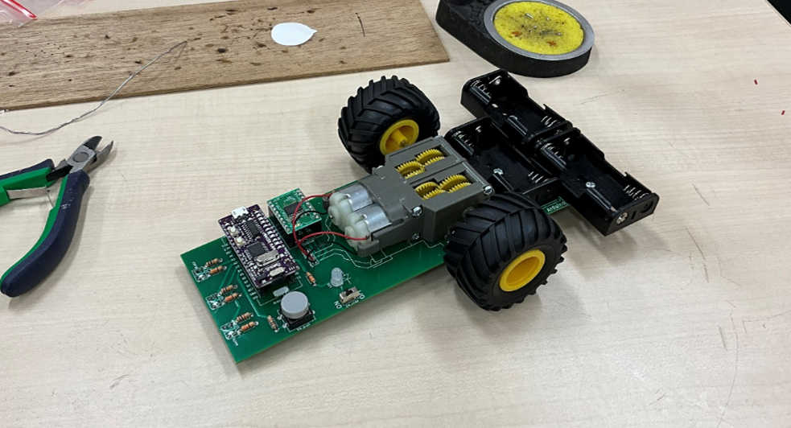

授業概要
今回の授業では、Arduinoのプルアップ機能を利用したピン設定、PWMを用いたLED制御、tone関数によるビープスピーカー制御などを扱いました。 授業全体はおおむね順調に進み、予定していた内容をすべて終えることができました。

LED制御の実習
LED制御では、アナログ出力の値を生徒自身に考えさせ試行錯誤してもらうことで、デジタル出力との違いを理解させることを意識しました。
PWMを使ったアナログ出力の概念は最初戸惑う生徒もいましたが、実際に値を変更して明るさが変わる様子を見ることで理解が深まったようです。

応用活動：tone関数によるメロディ演奏
ピン設定やLED制御を早めに終えた生徒には、tone関数を用いた周波数や音の長さの調整方法を指導し、 各自が工夫して自作のメロディをビープスピーカーで演奏するなど、応用的な活動にも取り組ませました。
生徒たちは創意工夫を凝らし、童謡からオリジナルのメロディまで様々な音楽をプログラミングしていました。 この活動を通じて、プログラミングの楽しさを実感してもらえたと思います。
